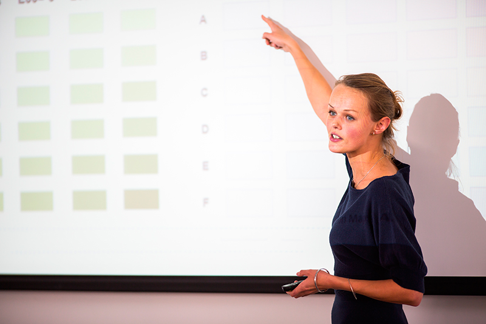

El
Centro Virtual Cervantes define proxémica como la: “parte de la semiótica (ciencia que estudia el sistema de signos empleado en la comunicación) dedicada al estudio de la organización del espacio en la comunicación lingüística; más concretamente, la proxémica estudia las relaciones -de proximidad, de alejamiento, etc.- entre las personas y los objetos durante la interacción, las posturas adoptadas y la existencia o ausencia de contacto físico”.
El término proxemia se refiere al empleo y a la percepción que el ser humano hace de su espacio físico, de su intimidad personal; de cómo y con quién lo utiliza.
La competencia proxémica permite establecer la interacción partiendo de unas coordenadas que expresan determinados significados y que, en ocasiones, obedecen a un complejo sistema de restricciones sociales.
A veces, la distribución del espacio está establecida de antemano, por ejemplo, en la sala, frente al tribunal evaluador.
La lejanía o acercamiento de una persona en relación a otras, proporciona información relevante. Acercarnos o alejarnos de los otros o en relación a otros objetos transmite mensajes contundentes.
En la exposición del trabajo, los objetos más importantes son el espacio físico y los materiales que utilizaremos para la defensa.
La forma en que nos acerquemos, separemos o permanezcamos cerca de la pizarra transmite nuestra capacidad, competencia y dominio de la situación.
Dicho de otra forma, nos hace parecer más preparados y competentes. Imagina las siguientes situaciones:
Situación 1: Te diriges a la Pizarra con decisión, avanzando un par de pasos y haces el gesto preciso que te permite borrar una línea que con anterioridad escribiste y que ahora no resulta necesaria.
Situación 2: Permaneces cerca de la Pizarra tras dibujar la línea y cuando no es necesaria, la borras, haciendo el gesto necesario y continúas la explicación.
En la primera situación, has calculado un movimiento de alejamiento de la pizarra tras escribir la línea, porque sabes de antemano que tendrás que borrarla más tarde. De esa forma, llamas la atención de los evaluadores sobre la línea que has trazado (se quita de en medio). El tribunal te devuelve la atención más tarde cuando te diriges con paso firme hacia la pizarra y borras con determinación la línea. El hecho de desplazarte de nuevo hacia la pizarra transmite una sensación de control y voluntad. Te diriges a hacer algo de una forma activa, decisiva.
En la segunda situación, has permanecido todo el tiempo cerca de la pizarra, sin alterar en ningún momento el foco perceptivo y tu gesto de borrar la línea probablemente ha pasado desapercibido por los evaluadores. No has conseguido poner en contraste tu competencia profesional (dominar el gesto para borrar de la Pizarra una línea que ya no hace falta).
La forma en que abordamos el manejo de los objetos y nuestra posición física en relación a los mismos es importante.
Hay que tener en cuenta que voluntaria o inconscientemente podemos utilizar el mobiliario de la sala como parapetos y eso siempre transmite un mensaje poderoso. Colocarnos detrás de las mesas o sillas no es una buena idea cuando pretendemos mostrarnos competentes y seguros de nosotros mismos. Los buenos oradores siempre solicitan aulas diáfanas para hacer sus exposiciones.
El orador debe buscar posiciones centrales dentro del foco perceptivo para manifestar aplomo y seguridad.
El espacio interpersonal es la distancia mínima que una persona necesita para sentirse cómoda en relación a otra. Esta distancia varía mucho entre individuos, culturas y situaciones, estableciéndose en aproximadamente un metro y medio.
El antropólogo Edward T. Hall, identificó varios tipos de espacios, clasificando el espacio personal en cuatro subcategorías:
Espacio íntimo: hasta aproximadamente 45 cm. Esta distancia podría subdividirse en dos intervalos distintos: entre 0 y 15 cm, distancia que presupone el contacto físico y que tendría lugar en situaciones comunicativas de máxima intimidad (por ejemplo, durante el mantenimiento de relaciones afectivas); y entre 15 y 45 cm, que se corresponde con una distancia menos íntima pero inserta en un marco de privacidad. Entendiendo el espacio íntimo, como un espacio donde estamos solos o acompañados en la proximidad del tacto, la mirada o la palabra íntima.
Espacio casual-personal: desde 45 cm a 120 cm. Es la distancia habitual en las relaciones interpersonales y permite el contacto físico con la otra persona. Se muestra en relaciones cercanas, como entre familiares y amigos.
Espacio social-consultivo: desde los 120 cm hasta los 364 cm. Se utiliza con las personas con quienes no tenemos ninguna relación. Es el que usamos para interactuar con las personas en nuestra vida cotidiana.
Espacio público: desde los 364 cm. hasta el límite de lo visible o lo audible. A esta distancia los participantes tienen que amplificar recursos como la voz para posibilitar la comunicación. El espacio público es el escenario de la interacción social cotidiana para satisfacer las necesidades colectivas que trascienden los límites de los intereses individuales. Esta distancia es la que se utiliza en las conferencias, ponencias, etc.
Hall (1971), concibe el espacio interpersonal, recurriendo a la imagen de una burbuja en la que de algún modo estaríamos encerrados cada uno de nosotros. Dicho esto, deberás tener en cuenta que la burbuja del tribunal es considerable y entrarás en ella sólo si tienes un motivo justificado y siempre que avises antes, por ejemplo diciendo: “A continuación voy a entregarles un documento que he preparado para que puedan seguir con más detalle mi exposición”.